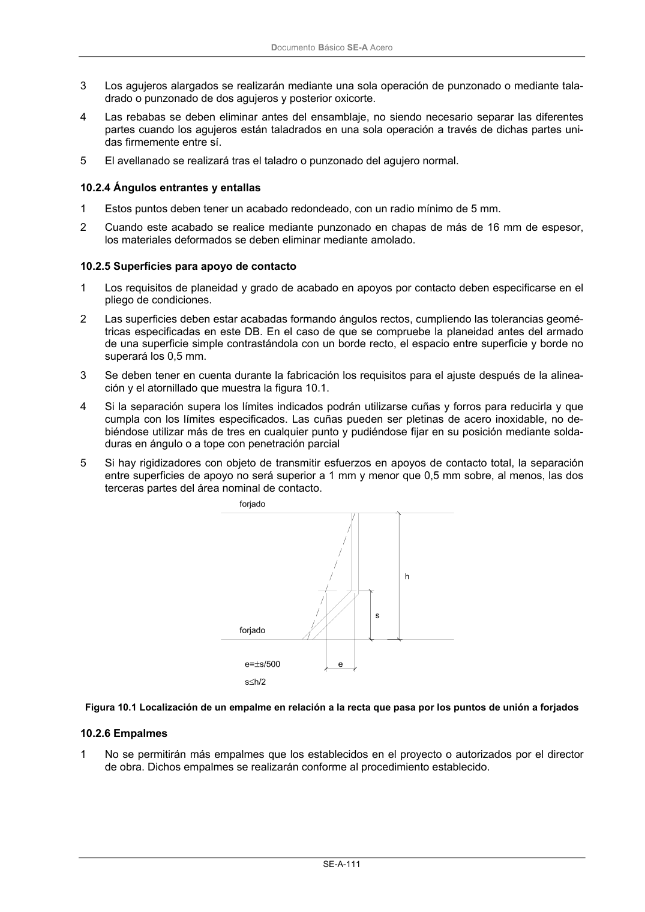

DB-SE-A Acero · edición 2007-10-23 · capa oficial
Documento DB-SE-A-oficial · SHA-256 del PDF 9ed9ea694aabfbda3bfbbef40dfe9223fde05d13c35bc2ba9751e5a96a22a64f
Copia fiel del PDF fuente · Fuente oficial
Ficha de la disposición en la fuente oficial
Formatos: JSON del segmento · Markdown
10.2.5 Superficies para apoyo de contacto 1 Los requisitos de planeidad y grado de acabado en apoyos por contacto deben especificarse en el pliego de condiciones. 2 Las superficies deben estar acabadas formando ángulos rectos, cumpliendo las tolerancias geomé- tricas especificadas en este DB. En el caso de que se compruebe la planeidad antes del armado de una superficie simple contrastándola con un borde recto, el espacio entre superficie y borde no superará los 0,5 mm. 3 Se deben tener en cuenta durante la fabricación los requisitos para el ajuste después de la alinea- ción y el atornillado que muestra la figura 10.1. 4 Si la separación supera los límites indicados podrán utilizarse cuñas y forros para reducirla y que cumpla con los límites especificados. Las cuñas pueden ser pletinas de acero inoxidable, no de- biéndose utilizar más de tres en cualquier punto y pudiéndose fijar en su posición mediante solda- duras en ángulo o a tope con penetración parcial 5 Si hay rigidizadores con objeto de transmitir esfuerzos en apoyos de contacto total, la separación entre superficies de apoyo no será superior a 1 mm y menor que 0,5 mm sobre, al menos, las dos terceras partes del área nominal de contacto. Figura 10.1 Localización de un empalme en relación a la recta que pasa por los puntos de unión a forjados
